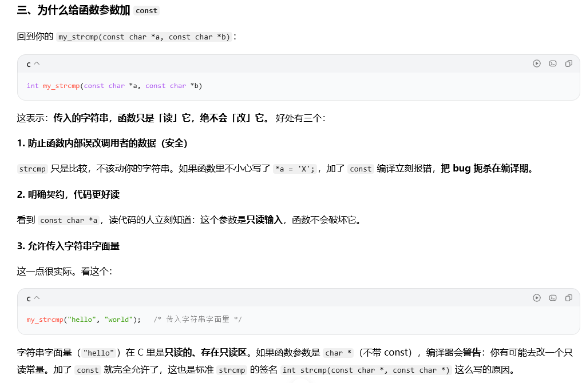

一个程序的结构可以概括成一句话：主函数 + 若干子函数。main 负责调度，子函数负责具体的计算与处理；合理拆分的前提，是函数之间只通过"参数进、返回值出"打交道，而不是共享一堆全局变量。
（一）定义、声明与调用
- 函数由返回类型、函数名、参数列表、函数体组成；调用前必须可见声明（原型）。
- C99 起取消隐式声明，未声明就调用会产生告警或错误，且参数类型会被错误推断。
- 参数传递是值传递：函数内修改形参不影响实参。要修改实参，必须传地址（指针）。
void swap_wrong(int a, int b) { int t = a; a = b; b = t; } /* 无效 */
void swap_ok(int *a, int *b) { int t = *a; *a = *b; *b = t; } /* 调用 swap_ok(&x, &y) */关于数组与指针作参数，有三条容易混的结论，值得单独记：
- 数组名是常量指针（地址固定，不能
arr++）；但传进函数退化成指针后，形参只是这个地址的"拷贝"，是个普通变量，可以随便移动 —— 移动它不影响调用者的数组。 - 凡是函数里要遍历数组，长度必须单独传：数组名传进去后，长度信息就丢了，函数内的
sizeof(arr)得到的是指针大小（8 或 4），不是数组长度。 - 指针参数能"带出"结果，但带不出
malloc的返回值：void getmemory(char *p)里p = malloc(100)只改了形参这个拷贝，调用者的指针仍是NULL（详见第九章的 getmemory 例题）。
（二）返回值：结果要 return 出来，不要只靠副作用
初学者常有两种毛病：一是函数清一色以 void 收尾，算完只在函数内 printf，调用方拿不到结果，想复用只能再抄一遍；二是结果靠"出参"或全局变量带出去，顺手把入参也改了，调用处的原数据就脏了。更稳的写法是三条纪律。
- 能返回就返回：计算结果用
return交出去；函数里不打印，打印与否由调用者决定。 - 输入只读：入参加
const，声明"我不动你"；要产出新值，就另开返回值或新缓冲区，而不是就地改实参。 - 每条路径都有返回：非
void函数漏写return属 UB，编译器会告警control reaches end of non-void function，务必清零这类告警。
/* 不推荐：结果靠出参带出，还改了入参 */
void normalize_bad(int *v, int n)
{
for (int i = 0; i < n; i++)
v[i] = v[i] / 100; /* 原数组被就地改写，无法回退 */
}
/* 推荐：输入只读，结果写进调用者给的缓冲区，返回值表示处理了几个 */
int normalize(const int *src, int n, int *dst, int cap)
{
if (src == NULL || dst == NULL || n > cap)
return -1; /* 用返回值表达失败，而不是静默继续 */
for (int i = 0; i < n; i++)
dst[i] = src[i] / 100;
return n;
}- 要返回多个值时，优先用结构体按值返回（小结构体编译器会走寄存器，成本很低），而不是全局变量；只有大块数据才用出参。出参名字加
_out后缀，一眼看出会被写。
关于"输入只读"这条纪律，值得展开说一下 const 加在参数上的实际作用（这也是面试爱问的点）：

三条好处里最后一条最容易被忽略：char * 形参无法接收字符串字面量（那是指向只读区的指针），只有 const char * 才收得下 —— 这正是标准库 strcmp 的签名写成 int strcmp(const char *, const char *) 的原因。
- 返回指针要管生命周期：永远不要返回局部变量的地址。函数返回后栈帧已销毁，那个地址就是个野指针，用之前必须先想清楚它指向的空间还在不在。
char *bad(void) { char buf[32]; return buf; } /* 悬垂，调用即 UB */
static char sbuf[32];
char *ok(void) { /* 填 sbuf */ return sbuf; } /* 可，但不可重入 */main的返回值就是退出码：return 0表示成功，非 0 表示异常，脚本和 CI 靠它判断成败。
（三）回调函数：用函数指针做参数
回调就是"把一段行为当参数传进去"。被调函数只管流程（何时遍历、何时比较），具体做什么由调用者决定。C 没有闭包，实现方式就是函数指针做参数。
#include <stdio.h>
/* 参数里接收一个函数指针：它吃一个 int、吐一个 int */
void for_each(int *arr, int n, int (*fn)(int))
{
for (int i = 0; i < n; i++)
arr[i] = fn(arr[i]); /* 这里不关心 fn 到底做什么 */
}
int square(int x) { return x * x; }
int negate(int x) { return -x; }
int main(void)
{
int a[3] = {1, 2, 3};
for_each(a, 3, square); /* 传函数名，不能写成 square() */
for_each(a, 3, negate); /* 换行为只换参数，流程一行不改 */
return 0;
}写法的三件套：声明用 返回类型 (*名字)(参数表)；传参只写函数名，加括号就变成先调用；调用 p(...) 与 (*p)(...) 等价。
- 用
typedef起名，避免括号看错位置：
typedef int (*cmp_fn)(const void *, const void *);
void sort(int *a, int n, cmp_fn cmp);- 标准库现成例子：
qsort的第四个参数就是回调。
#include <stdlib.h>
int cmp_int(const void *a, const void *b)
{
int x = *(const int *)a, y = *(const int *)b;
return (x > y) - (x < y); /* 不要直接 return x - y，差值会溢出 */
}
qsort(arr, n, sizeof(arr[0]), cmp_int);- 四个常见错误：
- 传成
cmp_int()—— 传的是返回值，类型不匹配，要么编译报错要么运行崩。 - 签名必须完全一致：参数表、返回类型都对得上，
qsort要的是const void *两个参数。 - 回调里不能用调用者栈上的局部变量地址（返回时已销毁）；需要携带上下文就多传一个
void *ctx参数。 - 函数指针为
NULL就直接调用，必然崩 —— 调用前判空。
一句话记忆：看到参数里出现
int (*)(...)这种写法，就知道这个函数在等"一段行为"，它自己只提供骨架。
（四）递归
递归必须满足两点：有明确的终止条件；每次递归规模向终止条件收敛。缺失终止条件会导致栈溢出（stack overflow）。
（五）作用域与存储类
| 关键字 | 作用 | 生命周期 |
|---|---|---|
auto | 局部变量默认，可省略 | 函数执行期间 |
static（局部） | 值在函数调用间保留，只初始化一次 | 整个程序运行期 |
static（全局/函数） | 限制为内部链接，仅本文件可见 | 整个程序运行期 |
extern | 声明外部定义的变量或函数 | 取决于定义处 |
register | 建议放入寄存器（现代编译器多忽略） | 函数执行期间 |
static 修饰局部变量的实质是延长生命周期：变量从"函数执行期间"变成"整个程序运行期"，但它作用域不变（还是只能在这个函数里访问），且只在第一次进入时初始化一次。这也是它常被用来做"函数级计数器"和"一次性初始化标志"的原因。
（六）函数章问题小结
这一章踩过的三个点，答案都指向同一件事 —— 函数拿到的是拷贝：
- 凡是函数里要遍历数组，长度都得作为参数单独传，因为数组名传进去后长度信息就丢了。
- 永远不要返回局部变量的地址：返回的地址默认就是野指针，用之前先确认它指向的空间还在。
- 数组名本身是常量指针（地址固定），但传进函数退化成指针后，形参成了这个地址的"拷贝"，是个普通变量，可以随便移动 —— 移动形参不会动到调用者的数组。